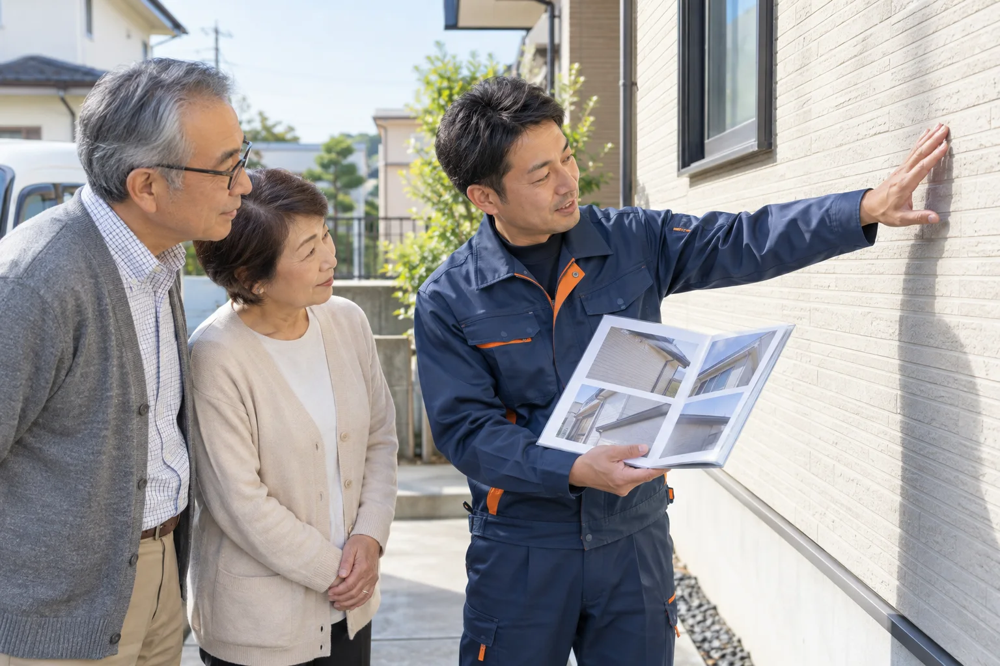

件の施工実績
船橋市を中心に10年。地域の気候と建物を知っています（2026年9月時点）。
ドローンで屋根まで撮影し、写真付きの診断書を無料でお渡しします。「まだ塗らなくていい」という結果なら、そうお伝えします。
施工 2,400件／口コミ評価 4.8（180件・2026年9月時点）

※写真はイメージです。診断だけのご依頼も歓迎です。
※施工イメージです。左右にドラッグしてくらべられます。実際の施工事例は、ご了承いただいたお客様の写真に差し替えます。
劣化の状態・下地補修・付帯部の範囲で変わります。正式な金額は、診断後の見積書でご確認ください。
口コミ評価 4.8 / 5（180件）
訪問の業者に急かされていましたが、写真を見せてもらい、まだ3年は大丈夫と分かって安心しました。
船橋市・60代（個人の感想です）
毎日LINEで工程の写真が届くので、留守にしていても進み具合が分かりました。
市川市・50代（個人の感想です）
見積もりが項目ごとに分かれていて、他社とくらべやすかったです。
習志野市・40代（個人の感想です）
船橋市を中心に10年。地域の気候と建物を知っています（2026年9月時点）。
一級塗装技能士の代表と自社の職人が担当。下請けに丸投げしません。
留守中の作業も、写真で確認できます。完成後は最長10年の保証書を発行します。
※保証期間は塗料と工事内容によって異なります。
当社からご自宅に営業に伺うことはありません。お問い合わせをいただいてから、診断に伺います。その場で契約をお願いすることもありません。
大丈夫です。診断書だけお受け取りいただき、他社の見積もりとくらべていただけます。
お住まいの市に住宅リフォームの助成制度がある場合、条件や申請方法をご案内します。年度ごとに内容が変わるため、診断時に確認します。
留守でも作業できます。毎日の工程写真をLINEでお送りします。
工事の前に、当社のスタッフがご近所へご挨拶に伺います。